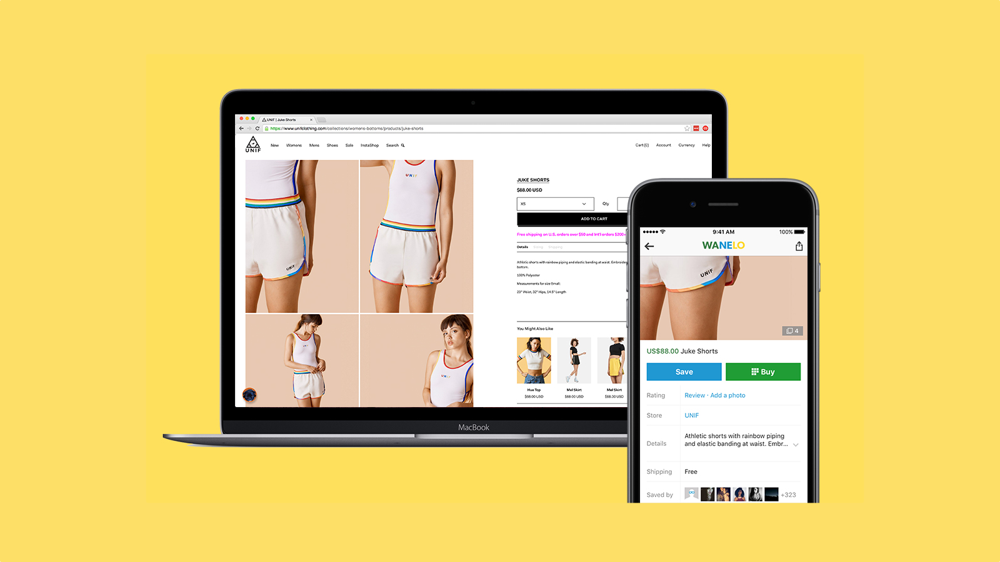
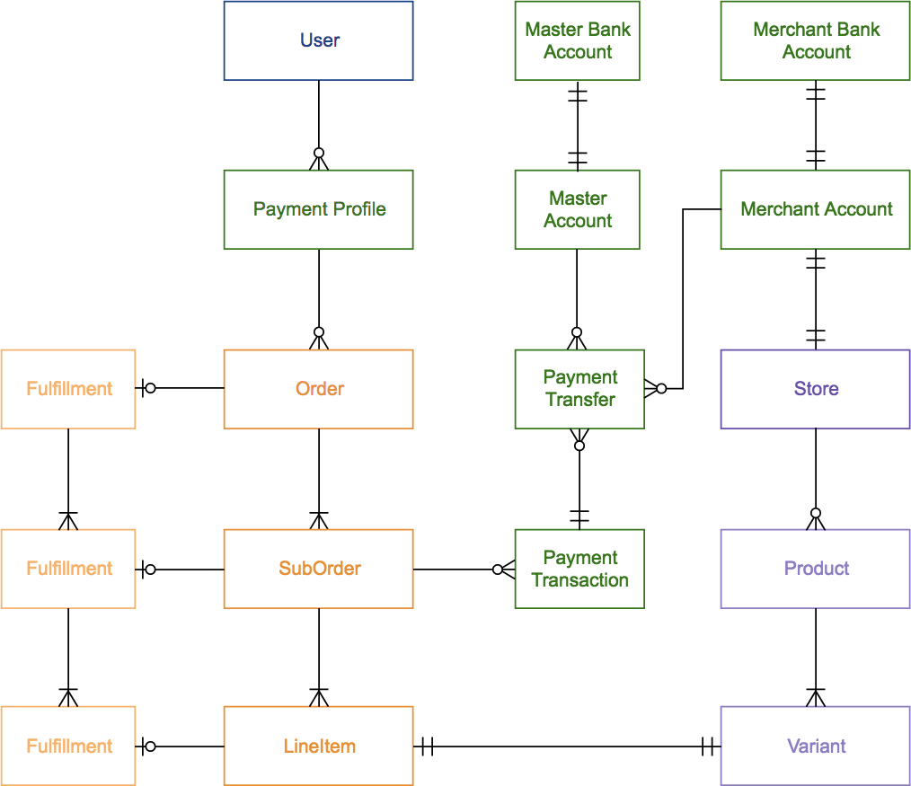

Wanelo · 2014
Transitioned Wanelo from an affiliate referral site to a fully integrated and automated ecommerce marketplace.

1
Problem
When Wanelo first launched, it was a referral-based shopping app — users were redirected to the retailer's own website to complete their purchase. I joined during the company's second iteration: a hodgepodge of elaborate manual processes that felt like a native checkout to the user, but was powered behind the scenes by an outsourced team manually placing orders on third-party sites on the customer's behalf.

2
Solution
My job was to transition Wanelo to a fully automated, direct checkout shopping app.
We did this almost entirely with other companies' APIs. We built the first third-party integration with Shopify that allowed merchants to sell on a shopping app — combining the available Shopify APIs (reading products, writing orders; the Sales Channel SDK wasn't a thing yet) with the beta version of Stripe Connect to onboard merchants and set up payment flows.
3
Results
4
Bonus
Fraud from buyers and sellers quickly became a problem, so I also led an integration with Sift to automatically flag suspicious orders, and with EasyPost to track order shipments and verify deliveries.
I also built Looker dashboards for our marketplace governance team: reports on seller performance, order delivery statuses, and popular selling products.